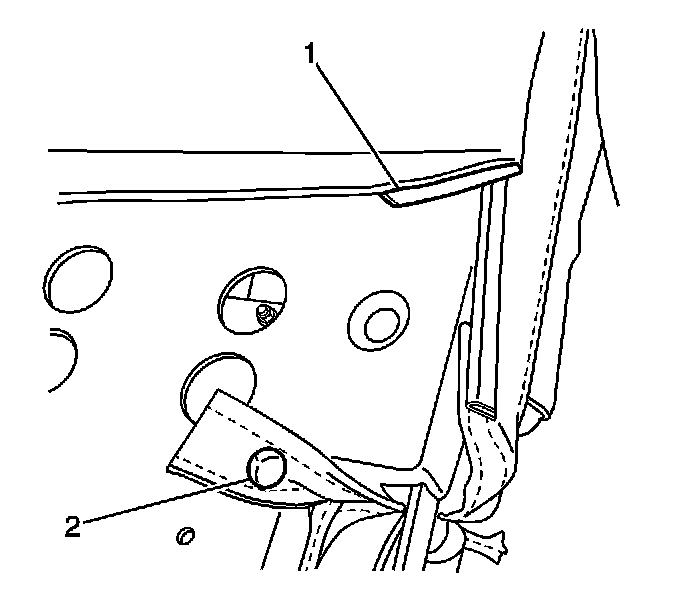
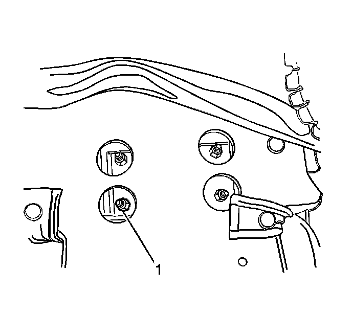

Rear Seat Armrest Replacement
Rear Seat Armrest Replacement
Removal Procedure
1. Move the left side of the seat in the full forward position.

2. Release the J-channel retainer (1) from the seat back.
3. Lift the seat back cover up to gain access to the armrest retainers.

4. Remove the armrest retaining nuts (1) from the armrest.
5. Remove the armrest from the seat.
Installation Procedure
1. Install the armrest into the seat back.
Notice: Refer to Fastener Notice (Fastener Notice) .
2. Install the armrest nuts (1).
Tighten the armrest nuts to 9 N.m (80 lb in).
3. Install the J-channel retainer (1) from the right side of the seat back.